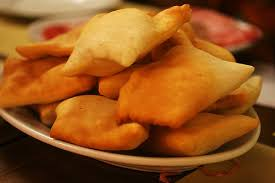
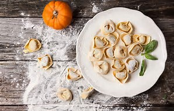
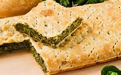
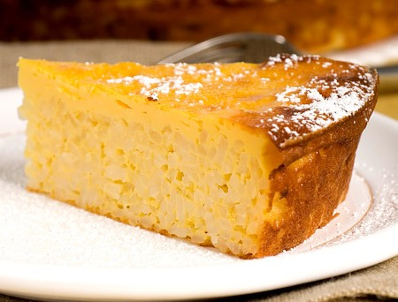

Popular Foods in Emilia Romagna
Some popular foods in Emilia Romagna are:
Crescentina
An appetizer, deep fried bread.

Pumpkin Ravioli
Pumpkin enclosed in a shell of pasta.

Erbazzone
A pie filled with greens.

Rice Cakes
A gluten free cake made of rice, milk, sugar, and candied fruit.

For my bibliography, click the link below: